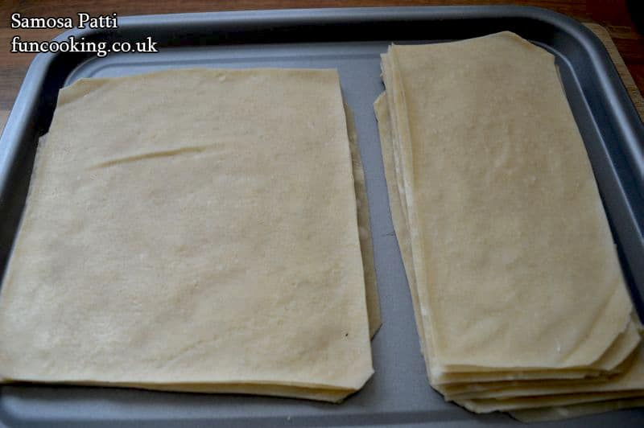
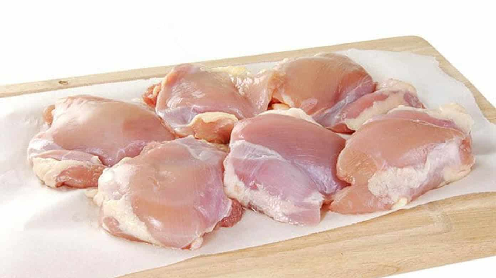
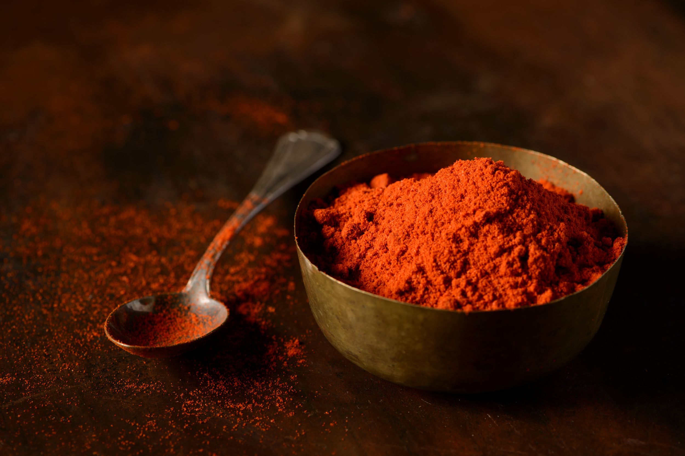
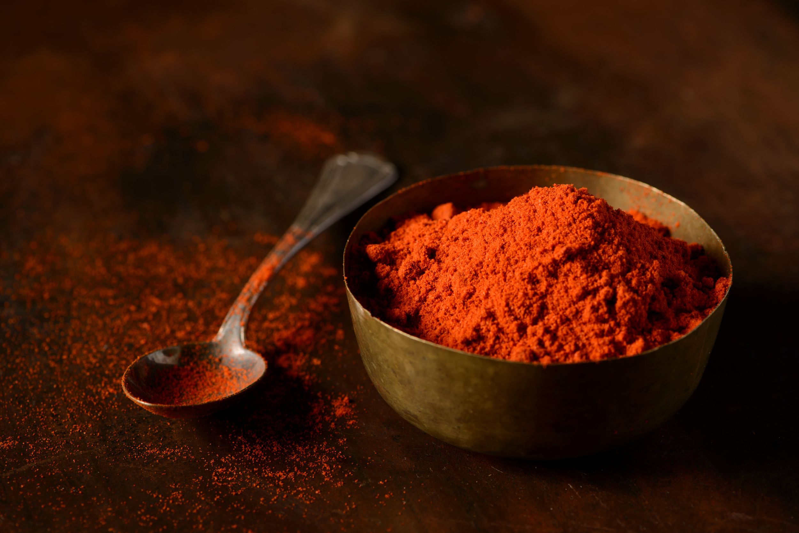
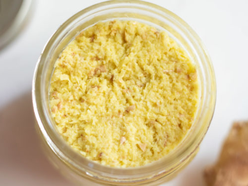
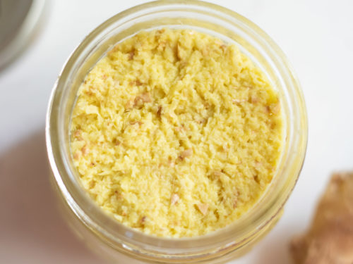
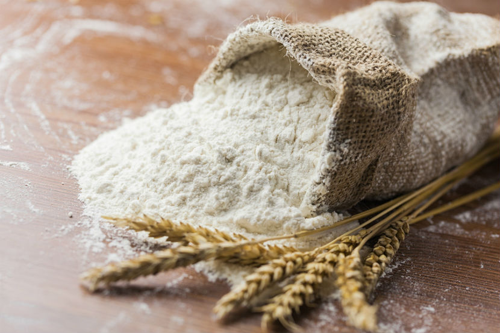
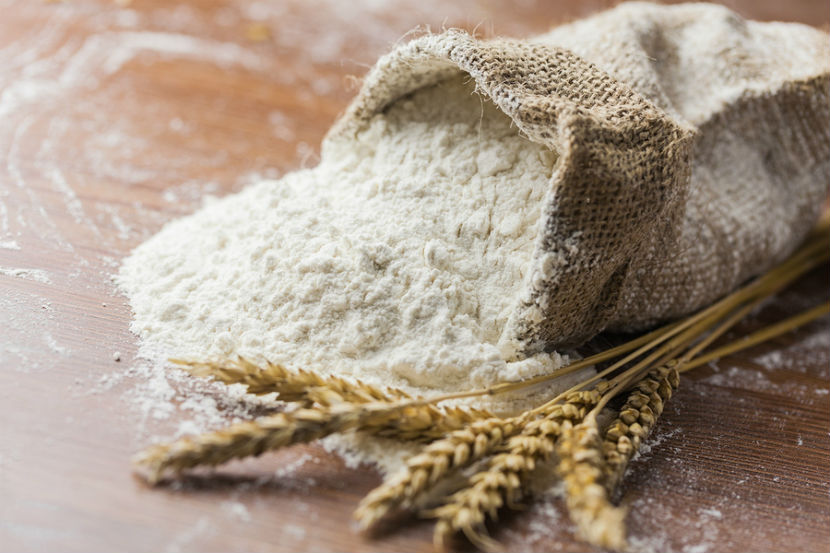

1.Acquire several frozen samosa sheets and leave them out to thaw.
2.Marinate boneless chicken pieces in ground turmeric, ground red/black pepper, ground cumin, ground coriander,salt, and other spices. Cook for a few minutes in water, then drain the water, and chop/blend the pieces to make a filling.
 



3.Cook chopped onion pieces with garlic and ginger paste in vegetable oil, and also add chopped Serrano peppers, When mixture is brownish, add the chicken and stir in low cooking heat.

 


 

4. Make a paste by mixing flour and water. For each samosa, add the cooked filling and fold sheet into triangle and glue using paste.
5.Keep samosas frozen until you want to eat them; if you wish to eat them, deep fry them with vegetable oil.
Return to index